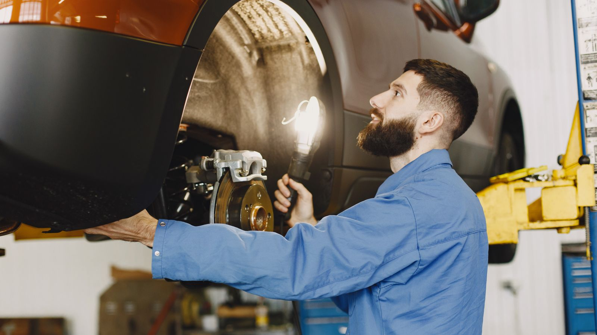

Open Monday to Saturday, 9 AM to 6 PM
Car care, tires and tags on Crain Highway.
Diagnostics, tune ups, oil changes, brakes, Maryland State Inspections, new and used tires, alignments and tag and title in Glen Burnie.
Authorized MD Inspection Station Station #6525
Open 6 days a week Monday to Saturday, 9 AM to 6 PM
Tag and title on site Handle your paperwork at the same stop
Services
Everything below is handled at 512 Crain Highway North, Suite 24. Call if you have a question before you stop by.
Diagnostic service
Check engine light on, or something just doesn't feel right? We'll find out what's going on and explain it plainly.
Tune ups
Regular tune ups help your engine run smoothly and start reliably.
Oil changes
Fresh oil and a new filter on your schedule, to keep your engine protected.
Brake service
Squeaking, grinding or a soft pedal? We'll check your brakes and take care of what they need.
Maryland State Inspections
We're an Authorized Maryland Vehicle Safety Inspection Station, #6525.
New and used tires
New tires or good used ones, whichever fits your car and your plans.
Alignments
If your car pulls to one side or your tires wear unevenly, an alignment can help.
Tag and title
Tags and title work handled right here, so you don't need a separate trip.
Maryland State Inspections
Crain Motor Cars is an Authorized Maryland Vehicle Safety Inspection Station, #6525. Buying a used car or moving to Maryland? Give us a call with any questions about your inspection.
Call about an inspectionVisit and contact
Calling is the quickest way to reach us.
- Address
- 512 Crain Highway North, Suite 24
Glen Burnie, MD 21061 - Phone
- +1 (443) 374-7309
- info@crainmotors.com
- Admin
- admin@crainmotors.com
- Hours
- Monday to Saturday, 9 AM to 6 PM
Sunday closed
Quick answers
Do you do Maryland State Inspections?
Yes. We're an Authorized Maryland Vehicle Safety Inspection Station, #6525.
Can I take care of tags and title there too?
Yes. Tag and title work is handled on site at 512 Crain Highway North, Suite 24.
Are you open on Sunday?
No. We're open Monday to Saturday, 9 AM to 6 PM, and closed on Sunday.
What's the fastest way to reach you?
Call +1 (443) 374-7309. You can also email info@crainmotors.com.